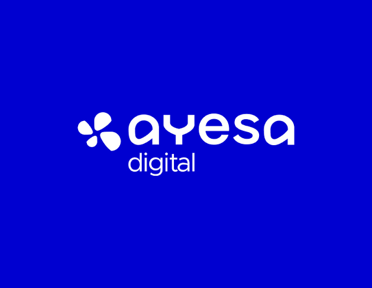

Ayesa Digital
2026 — ActualidadRealicé las prácticas del segundo curso del ciclo formativo de DAW (3 meses), finalizando el 1 de junio de 2026, en esta empresa de desarrollo software. Tras finalizar las prácticas, la empresa decidió contratarme y actualmente continúo trabajando en Ayesa Digital. Durante mi etapa estuve enfocado en el proyecto Kronos, desarrollado en Java 8, donde realicé depuración y modificación de código utilizando IntelliJ IDEA. También realicé pruebas del sistema de Kronos y las documenté en Jira. Llevé a cabo cruces de datos mediante Excel y consultas en base de datos con SQL, utilizando DBeaver como herramienta de gestión, con la cual también accedí a Cassandra. Para el control de versiones utilicé Git junto con SourceTree, y además trabajé con herramientas como SOAP y PuTTY.
